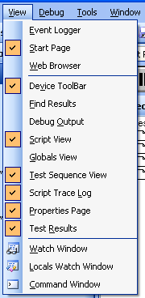

The View menu is used to change the visibility of different windows in the application. Most windows are visible by default. Simply click on a window name in the View menu to bring it in or out of view.

Astronics Test Systems
Last updated on 12/5/07 by L. Anhalt